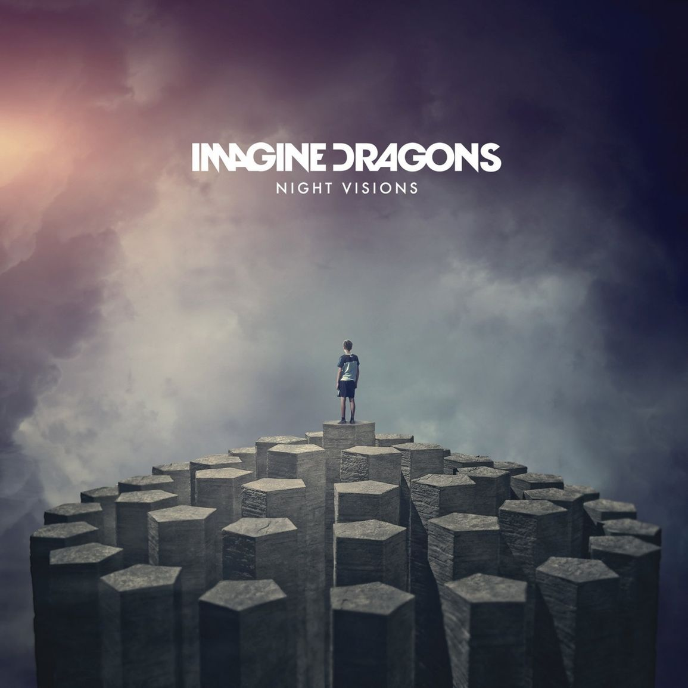

Night Visions

Опис альбому
Night Visions - дебютний студійний альбом американського поп-рок та інді-рок гурту Imagine Dragons, випущений лейблом Interscope Records. Платівка поєднує елементи альтернативного року, електроніки та потужної перкусії, що швидко принесло колективу світове визнання.
Особливий успіх альбому забезпечив сингл «Radioactive», який встановив рекорд перебування в чарті Billboard Hot 100 і отримав премію «Греммі» за найкраще рок-виконання.
«Ми хотіли створити альбом, який звучатиме масштабно на великих аренах, але водночас залишатиметься щирим та особистим для кожного слухача».
Характеристики релізу
- Виконавець
- Imagine Dragons
- Жанр (категорія)
- Альтернативний рок
- Дата виходу
- Кількість треків
- 11 композицій
- Загальна тривалість
- Статус у колекції
- Прослухано повністю (улюблений реліз)
Трекліст альбому
| Номер | Назва композиції | Тривалість |
|---|---|---|
| 1 | Radioactive | |
| 2 | Tiptoe | |
| 3 | It's Time | |
| 4 | Demons | |
| 5 | On Top of the World | |
| 6 | Amsterdam | |
| 7 | Hear Me | |
| 8 | Every Night | |
| 9 | Bleeding Out | |
| 10 | Underdog | |
| 11 | Nothing Left to Say / Rocks |
Залишити відгук про альбом
Поділіться враженнями від прослуховування релізу. Форма надсилається методом GET для навчальної перевірки переданих параметрів.